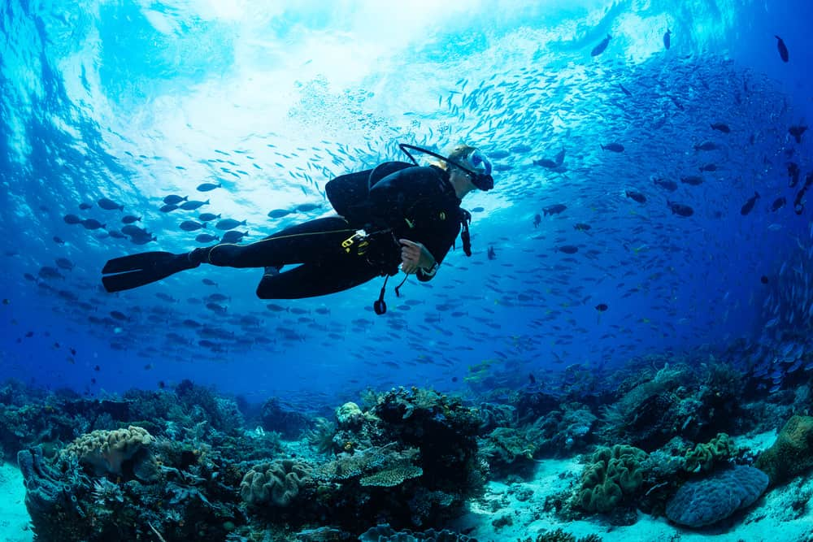
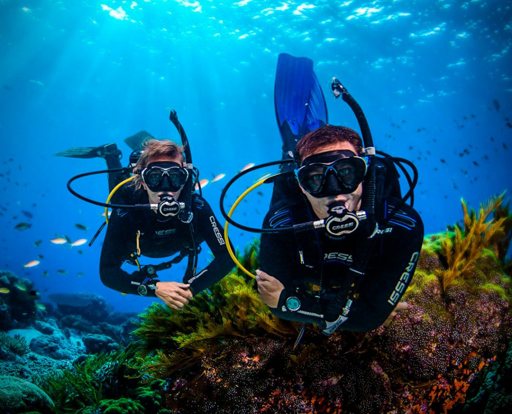
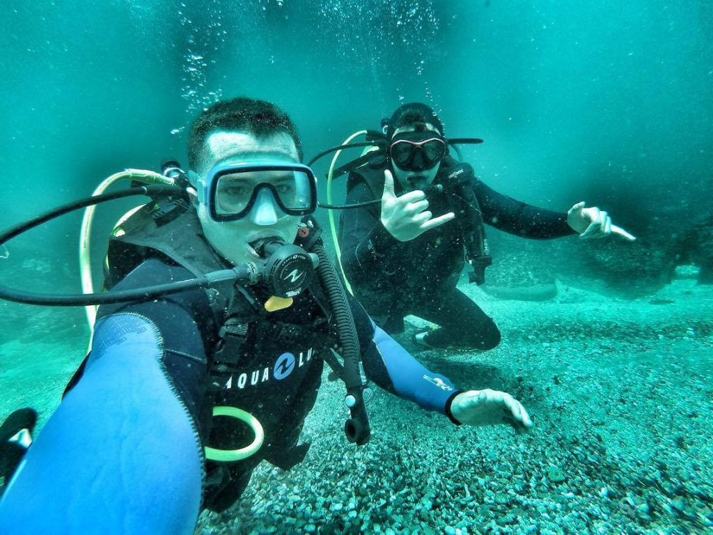

  
El buceo es el acto por medio del cual el ser humano se sumerge en el agua, ya sea el mar, un lago, un río, una cantera inundada o una piscina, con el fin de desarrollar una actividad deportiva, profesional, científica o militar con o sin ayuda de equipos especiales. Se denomina escafandrismo al buceo con escafandra,1 mientras que al buceo a pulmón (sin aparatos de respiración) se le llama apnea o buceo libre.
Existen pruebas de que el buceo en apnea ha sido practicado durante miles de años para conseguir alimentos o riquezas (perlas o coral, por ejemplo) y también con fines militares.
El buceo con escafandra, utilizando casco y respirando aire suministrado desde superficie, se empezó a desarrollar a lo largo del siglo xvi, siendo obligatoria la presencia de dos buzos a bordo de todas las flotas españolas de la Carrera de Indias desde al menos 1605.
El buceo recreativo se practica en dos modalidades: el buceo libre o en apnea (griego: apnoia, descenso a la profundidad del mar a pulmón libre, es decir, sin equipos de submarinismo tradicionales), y el buceo autónomo o con escafandra autónoma. Las técnicas de apnea y con equipo autónomo con aire pertenecen a la categoría recreativa. También se considera buceo recreativo el uso de mezclas de aire enriquecido (Nitrox) con porcentajes de O2 hasta el 40 %,10 mientras que las técnicas de buceo autónomo con otras mezclas de gases (Nitrox más enriquecido, Heliox, Trimix) o el uso de recicladores de aire (también llamados «dispositivos de asistencia de respiración reciclada» o rebreathers) se consideran dentro de la categoría de buceo técnico o profesional, debido al riesgo y al nivel de preparación requerido por el buzo que las emplea. Según las distintas escuelas y normativas, el buceo recreativo se limita por lo general a los 20-40 metros de profundidad,11 mientras que en el buceo profesional, con mezclas especiales de gases, se suelen alcanzar profundidades superiores a los 100 m.
El buceo libre o en apnea consiste en realizar inmersiones manteniendo la respiración después de una profunda inspiración en superficie. Puede practicarse sin ningún equipo especial, pero la configuración recreativa actual consta de una máscara apropiada, aletas, tubo de respiración o esnórquel, lastre, y si es necesario, un traje de material termoaislante. Es la forma de buceo más sencilla y más antigua empleada por el hombre, y aparece en diversas regiones y culturas para explotar fuentes de alimento (peces, crustáceos y moluscos), recursos útiles (algas, esponjas, corales) y recursos de valor cultural o económico (perlas).en la nieve.
divulgación de la experiencia subacuática gracias a documentales difundidos en los medios (como los de Jacques Cousteau), la investigación para la comprensión de la fisiología del buceo, y la mejora de los equipos han contribuido a esta expansión de la actividad.
Existen diferentes especialidades en el ámbito comercial, militar y recreativo, como la fotografía submarina, el buceo profundo, buceo en pecios, buceo en cavernas, buceo nocturno, arqueología submarina, investigación biológica, mantenimiento naval, pesca submarina, o recuperación y rescate, o por pura diversión, entre otros. La práctica de algunas de estas especialidades exige cursos de formación previa.
Las particularidades fisiológicas del buceo hacen necesario el seguimiento de reglas estrictas y el respeto de los límites de seguridad, por lo que la práctica segura del buceo (particularmente en el caso del buceo autónomo) requiere de una formación específica. Cada país es responsable de la reglamentación y control de este tipo de actividad recreativa, y por regla general se exige una titulación reconocida que certifique el conocimiento de las reglas y normas, así como en determinados casos, un mínimo experiencia, que habitualmente se establece exigiendo un determinado número de inmersiones previas. El número de inmersiones requeridas oscila habitualmente entre 15 y 50, en función de la dificultad del sitio de buceo.
Durante inmersiones en aguas abiertas y con tráfico es obligatoria la declaración de la actividad a las demás embarcaciones mediante una «boya deco» (bandera de advertencia). En el Código Internacional de Señales se estipula que la bandera alfa (A) en una embarcación estacionaria significa «Buzo sumergido, mantenga distancia». La bandera roja con diagonal blanca es utilizada internacionalmente como identificación del buceo recreativo, pero no es válida como aviso para la navegación, ya que no forma parte del Código Internacional de Señales de la OMI (Organización Marítima Internacional).